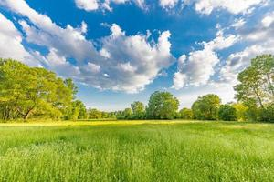

Agrinho do Campo a Cidade Colhendo Oportunidades
-
Agrinho é um programa educacional promovido pela
Federação da Agricultura e Pecuária do Estado de São Paulo (FAESP).
Principal objetivo do programa é promover a educação e a conscientização sobre a importância
do setor agrícola e suas práticas sustentáveis
-
A sustentabilidade rural é um conceito fundamental para garantir que as práticas agrícolas
e de gestão de recursos no meio rural sejam equilibradas e não comprometam a
capacidade das futuras gerações de atenderem suas próprias necessidades.

Aqui darei algumas sujestões para que o campo e cidade existam em harmonia, assim também melhorando
a qualidade de vida da população. Para mais informações vá para a proxima página.